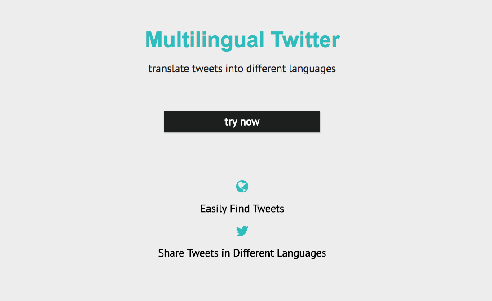

Smile, breathe and go slowly.
Thich Nhat Hanh
About Dana Ng
Welcome to my portfolio website. My name is Dana Ng, and I'm based in San Jose, CA. I'm a web developer who loves to build clean, efficent applications on the web and mobile. I mainly use JavaScript, but dabbling with Python/Flask and C/C++/C#.
Besides learning more about programming, I'm also an aspiring polyglot, studying to speak 5 languages fluently. I like staying active outdoors by traveling, hiking and playing soccer. In addition, I'm a foodie and amateur chef. I hope to combine my interests in living a minimalist and sustainable lifestyle with my work. Feel free to connect with me.
Projects
Simple Code

A place to store, search, and aggregate all your coding snippets into your own library.
javascript, heroku, react, redux node/express, jwt token, mongodb/mongoose, react-codemirror
Multipurpose

An app that allows users to look up information on how to find multipurpose uses for non-toxic, common household items.
javascript, heroku, mocha/chai, node/express, passportjs, handlebars, bootstrap, mongodb/mongoose
Multilingual Twitter
An application that uses Twitter API and Yandex API to query for tweets, and translate the tweets into another language, retweet in new language and view original tweets.
javascript, heroku, node/express, jquery, yandex api, twitter api
Other Projects
The following links are additional projects I have done in order to improve my programming skills.
- Freecode Camp Projects
- Harvard CS50 - Introduction to Computer Science
- Udacity Front End Developer Nanodegree
- Udacity Full Stack Developer Nanodegree